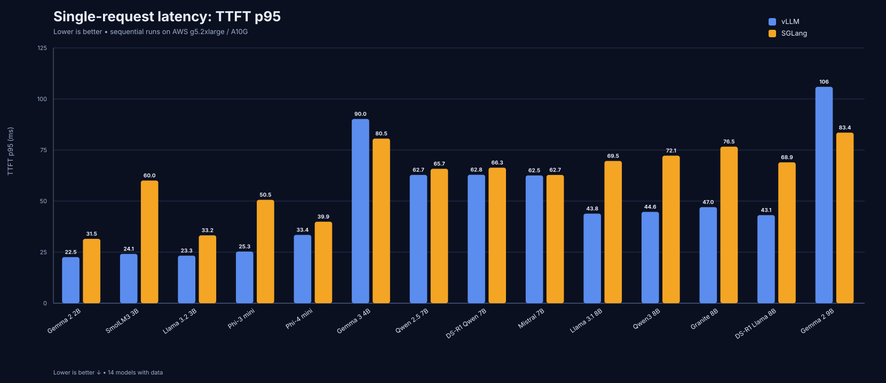
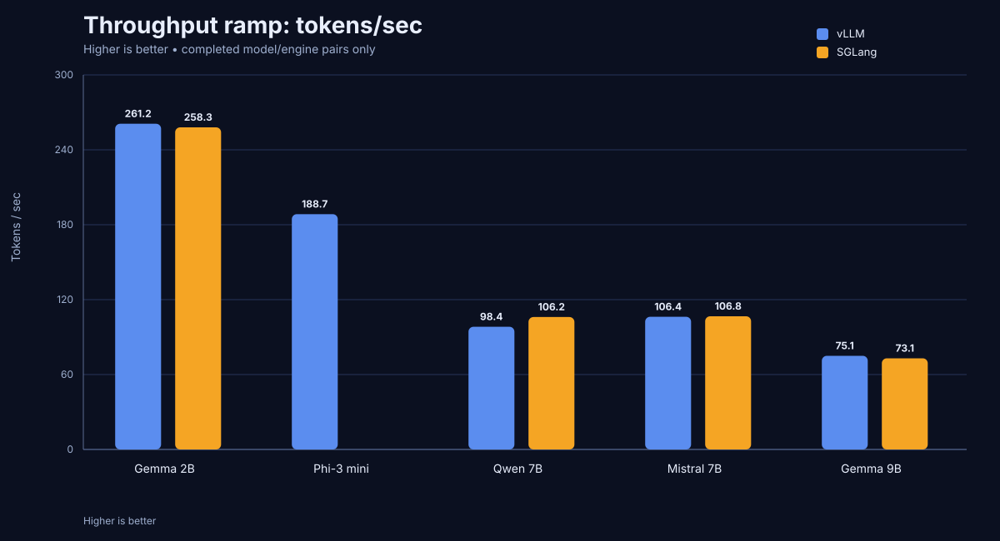
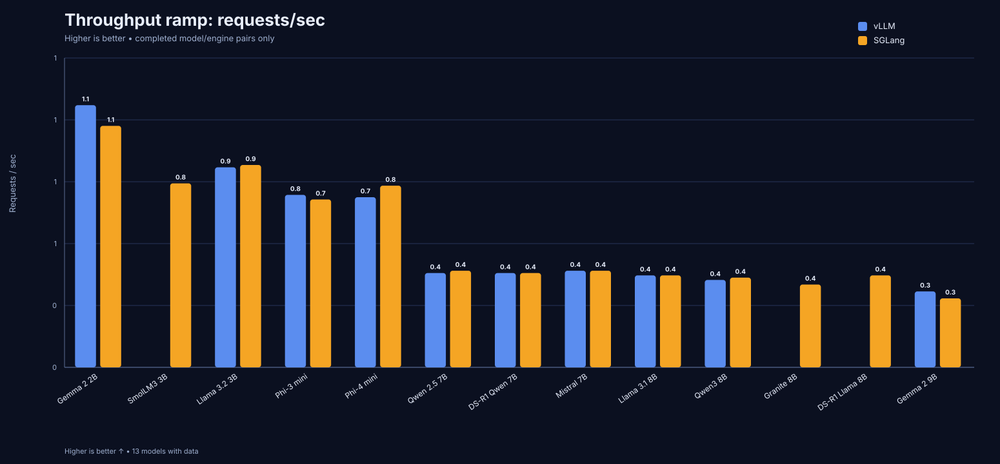
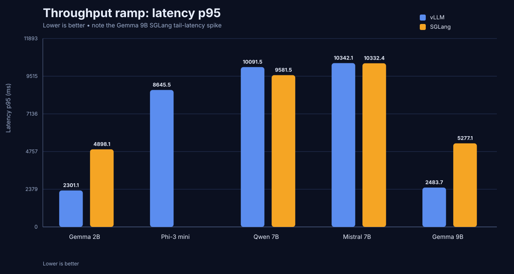
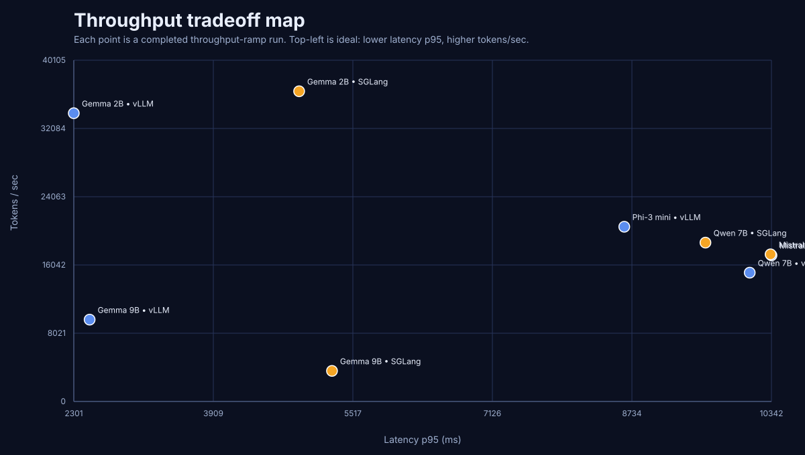

This is the polished report for the completed single-A10G benchmark matrix comparing vLLM and SGLang across multiple open models.





| Model | Scenario | Engine | TTFT p50 | TTFT p95 | Latency p95 | Tok/s | Req/s | Success |
|---|---|---|---|---|---|---|---|---|
| Gemma 2B | single_request_latency | vLLM | 19.7 ms | 22.5 ms | 1655.6 ms | 77.6 | 0.75 | 100.0% |
| Gemma 2B | single_request_latency | SGLang | 30.4 ms | 31.5 ms | 1656.1 ms | 78.2 | 0.75 | 100.0% |
| Llama 3.2 3B | single_request_latency | vLLM | 22.6 ms | 23.3 ms | 1928.7 ms | 66.3 | 0.52 | 100.0% |
| Llama 3.2 3B | single_request_latency | SGLang | 32.1 ms | 33.2 ms | 1903.4 ms | 67.7 | 0.53 | 100.0% |
| Phi-3 mini | single_request_latency | vLLM | 25.0 ms | 25.3 ms | 2233.8 ms | 57.8 | 0.45 | 100.0% |
| Phi-3 mini | single_request_latency | SGLang | 43.2 ms | 50.5 ms | 2319.8 ms | 55.7 | 0.44 | 100.0% |
| Mistral 7B | single_request_latency | vLLM | 41.0 ms | 62.5 ms | 4064.0 ms | 31.8 | 0.26 | 100.0% |
| Qwen 7B | single_request_latency | vLLM | 40.9 ms | 62.7 ms | 4220.3 ms | 30.6 | 0.29 | 100.0% |
| DeepSeek-R1 Distill 7B | single_request_latency | vLLM | 40.1 ms | 62.8 ms | 4215.8 ms | 30.5 | 0.28 | 100.0% |
| Mistral 7B | single_request_latency | SGLang | 62.4 ms | 62.7 ms | 4047.0 ms | 31.8 | 0.26 | 100.0% |
| Qwen 7B | single_request_latency | SGLang | 65.6 ms | 65.7 ms | 4170.2 ms | 30.9 | 0.27 | 100.0% |
| DeepSeek-R1 Distill 7B | single_request_latency | SGLang | 65.7 ms | 66.3 ms | 4177.2 ms | 30.9 | 0.24 | 100.0% |
| Llama 3.1 8B | single_request_latency | vLLM | 42.7 ms | 43.8 ms | 4247.3 ms | 30.3 | 0.24 | 100.0% |
| Qwen3 8B | single_request_latency | vLLM | 44.0 ms | 44.6 ms | 4377.4 ms | 29.5 | 0.23 | 100.0% |
| Llama 3.1 8B | single_request_latency | SGLang | 66.7 ms | 67.0 ms | 4247.2 ms | 30.3 | 0.24 | 100.0% |
| Qwen3 8B | single_request_latency | SGLang | 69.1 ms | 71.4 ms | 4382.9 ms | 29.2 | 0.23 | 100.0% |
| Gemma 9B | single_request_latency | vLLM | 74.0 ms | 105.8 ms | 5360.3 ms | 24.0 | 0.21 | 100.0% |
| Gemma 9B | single_request_latency | SGLang | 82.9 ms | 83.4 ms | 5312.4 ms | 24.1 | 0.21 | 100.0% |
| Model | Scenario | Engine | TTFT p50 | TTFT p95 | Latency p95 | Tok/s | Req/s | Success |
|---|---|---|---|---|---|---|---|---|
| Gemma 2B | throughput_ramp | vLLM | 41.1 ms | 135.5 ms | 4588.2 ms | 264.7 | 1.14 | 100.0% |
| Gemma 2B | throughput_ramp | SGLang | 46.9 ms | 156.1 ms | 4844.5 ms | 258.0 | 1.05 | 100.0% |
| Llama 3.2 3B | throughput_ramp | vLLM | 49.5 ms | 174.9 ms | 5415.8 ms | 223.5 | 0.87 | 100.0% |
| Llama 3.2 3B | throughput_ramp | SGLang | 46.3 ms | 159.5 ms | 5544.7 ms | 226.0 | 0.88 | 100.0% |
| Phi-3 mini | throughput_ramp | vLLM | 53.7 ms | 228.9 ms | 8063.6 ms | 190.9 | 0.75 | 100.0% |
| Phi-3 mini | throughput_ramp | SGLang | 56.6 ms | 167.3 ms | 7538.7 ms | 187.2 | 0.73 | 100.0% |
| Mistral 7B | throughput_ramp | vLLM | 92.5 ms | 209.8 ms | 10139.1 ms | 106.6 | 0.42 | 100.0% |
| Qwen 7B | throughput_ramp | vLLM | 92.5 ms | 196.5 ms | 9772.7 ms | 105.3 | 0.41 | 100.0% |
| DeepSeek-R1 Distill 7B | throughput_ramp | vLLM | 92.6 ms | 184.7 ms | 9322.1 ms | 105.6 | 0.41 | 100.0% |
| Mistral 7B | throughput_ramp | SGLang | 72.7 ms | 179.3 ms | 10122.3 ms | 106.8 | 0.42 | 99.9% |
| Qwen 7B | throughput_ramp | SGLang | 65.9 ms | 175.1 ms | 9542.9 ms | 106.3 | 0.42 | 100.0% |
| DeepSeek-R1 Distill 7B | throughput_ramp | SGLang | 69.7 ms | 313.3 ms | 9603.0 ms | 106.1 | 0.41 | 100.0% |
| Llama 3.1 8B | throughput_ramp | vLLM | 97.6 ms | 195.6 ms | 10523.5 ms | 101.7 | 0.40 | 100.0% |
| Qwen3 8B | throughput_ramp | vLLM | 101.6 ms | 203.7 ms | 11529.1 ms | 98.4 | 0.38 | 100.0% |
| Llama 3.1 8B | throughput_ramp | SGLang | 69.0 ms | 183.0 ms | 10617.4 ms | 102.1 | 0.40 | 100.0% |
| Qwen3 8B | throughput_ramp | SGLang | 71.4 ms | 199.3 ms | 11749.9 ms | 98.6 | 0.39 | 100.0% |
| Gemma 9B | throughput_ramp | vLLM | 126.9 ms | 280.3 ms | 14399.0 ms | 79.8 | 0.33 | 100.0% |
| Gemma 9B | throughput_ramp | SGLang | 124.6 ms | 25982.1 ms | 46027.4 ms | 77.5 | 0.30 | 99.7% |